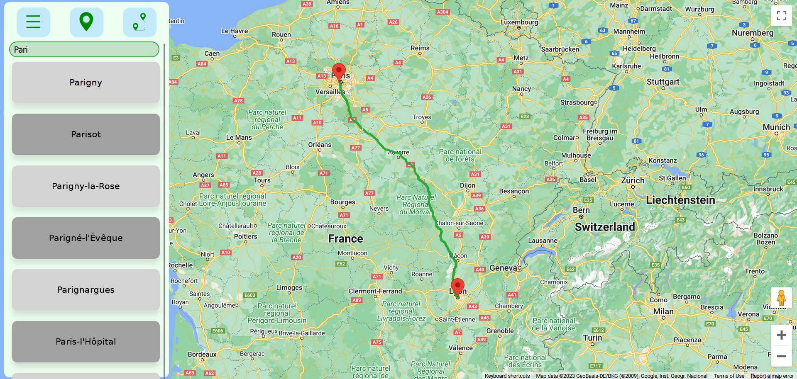

Chocomaps
 Chocomaps est une application de calcul d’itinéraire développée pour la SAE de 4e semestre du BUT. Toujours dans une équipe de 4 organisée en SCRUM, nous devions reprendre une version de base du site puis l'optimiser, rajouter des fonctionnalités et améliorer l’interface. Pour cela, nous devions implémenter des éléments d’API REST, utiliser des librairies externes et mettre en pratique ce que nous avions appris sur les tests et les algorithmes.Optimisation de l'application
Depuis le code de base fourni, nous avons tous cherché différentes manières de l’optimiser avec différentes approches sur les multiples parties de l’application.Algorithmes de calcul de trajet
Une première étape a été la recherche d’un meilleur algorithme, celui de base, dijkstra, fonctionnait, mais ne pouvait pas supporter de grands trajets. Nous sommes passés par plusieurs alternatives, d’une version améliorée de dijkstra à un A* utilisant le cache. Pour ma part, j’ai développé une version de dijkstra avec une priority queue afin d’optimiser la récupération de la ville la plus intéressante par rapport à la distance. Bien qu’elle ne fut pas utilisée dans la version finale, cela m’a permis de revoir dijkstra et faire ma propre implémentation de priority queue.
Base de données
Un ensemble d’opérations a été effectué sur la base de données. Par exemple, nous avons mis des index sur les attributs les plus importants et créé des vues matérialisées pour réduire la complexité et le temps des requêtes.
Profilage avec XDebug
Pour guider l’optimisation, j’ai installé l’extension XDebug qui permet non seulement de pouvoir utiliser les breakpoint sur l’IDE et donc d’analyser le code, mais aussi de pouvoir faire du “profiling” pour observer le comportement du code. En effet, grâce à cet outil, j’ai pu mettre en avant les méthodes qui concentrent le plus de temps, avec notamment le nombre d’appels effectués, et donc, proposer des pistes d’améliorations sur les endroits clef.

Refonte de l'architecture
Plusieurs changements majeurs ont été effectués sur l’architecture du projet en vue de mieux séparer les différentes couches.API REST
Plusieurs changements ont été fait pour que notre application respecte les principes d’API REST. J'ai ainsi implémenté le système de routage, la gestion d’authentification des utilisateurs en stockant un jeton dans les cookies et la création systématique d’interfaces.
MVCS
Nous sommes également passés à une architecture MVCS (Model View Controller Service) pour mieux organiser notre code. J’ai donc refactor le code des contrôleurs vers les services pour séparer la logique métier afin de faciliter la compréhension et respecter le principe de responsabilité unique.
Tests unitaires
Je me suis chargé de développer l’ensemble des tests du projet avec l’extension PHPUnit. Le refactor du code vers les services a été d’une grande aide, le retour des méthodes de services pouvant être testé directement.
De plus, la création d’interface des API a permis la mise en place de mock pour mes tests. Grâce au mock et aux services, j’ai pu vérifier les résultats de chaque méthode individuellement.
Enfin, j’ai tenu compte de la couverture de code comme critère afin de créer les tests les plus pertinents pour toucher le plus de lignes de code.